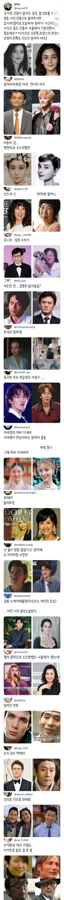

https://www.fmkorea.com/best/10340127042

https://www.fmkorea.com/best/10340127042

해품달에 나온 기안84닮으신분
난 톰크루즈랑 정우성이랑 닮은거 같던데
돌리 파튼은 진짜 똑같네;
난 방금전까지도 저게 박해미 본인인줄알았다
쌍둥이급이네ㅋㅋ
외래종은 씝 ㅋㅋㅋㅋㅋㅋㅋㅋㅋ
톰 요크 / 임형준
나만 비슷한가??
나무위키 2000년대 사진은 닮았다
임형준은 타지리닮음
페이커가 없네
침착맨 중국배우 어디갓어
안톤 쉬거랑 씨익아저씨
푸다롱과 이병건 어디가숴
브래드 홍표는 이제 과거의 영광인가!
왜 다 닮았냐? ㅋㅋㅋㅋㅋㅋㅋㅋ
난 밴드오브 브라더스 주인공 나온사람하고 김갑수 비숫하든대
윈터스?
ㅇㅇ갸
팽현숙 윈터 닮았다
노에미 ㄷㄷㄷ
그건 인터폴이야 인터폴!!!!
이르판칸은 일용이와 오만석을 섞은 얼굴인데
돌리파든ㅋㅋㅋ
팽현숙은 전성기 진짜 레전드인듯
브래드피트와 중국 노가다아재
후카다에이미
페이커 추가 해야지
성별이 다른데 똑같이 생긴..
킬리안 얀복 ㅋㅋㅋㅋㅋㅋ